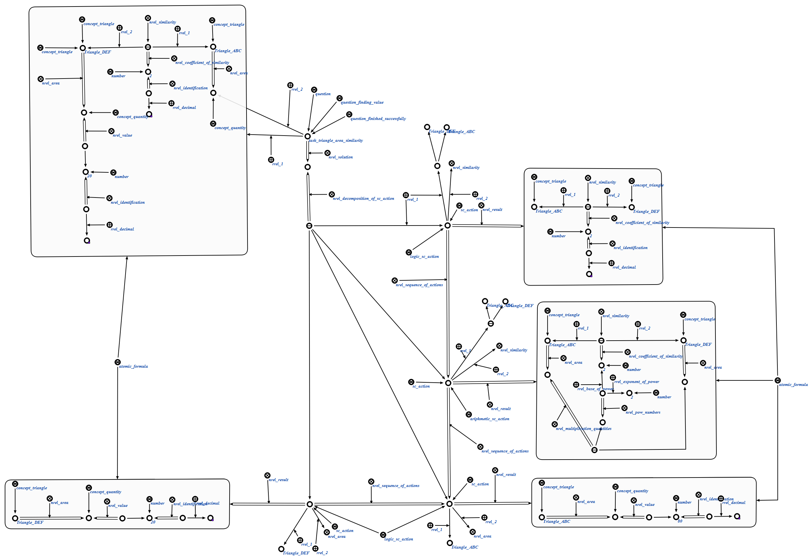

Задачей scp-программы применения аналогии
является применение аналогии для поиска значения неизвестной величины.
Первым входным параметром данной scp-программы является величина,
значение которой нужно найти
или число,
для которого нужной найти идентификацию, вторым --
комментарий о результате применения аналогии,
третьим -- узел декомпозиции решения.
В ходе выполнения программы явно указывается связь со следующими ключевыми узлами:
отношениями периметр*, площадь*, длина*, подобие*, конгруэнтность* и равновеликие* устанавливающими критерии поиска соответствующей конструкции в базе знаний и определяющими путь нахождения неизвестной величины;
отношением результат* и абсолютным понятием атомарная формула необходимыми для построения дерева декомпозиции решения.
Пример выполнения данной scp-программы представлен ниже:
